チャプター 01
はじめに
PEFスタジオは、文章・画像・読み上げ音声をまとめて、音声付きEPUBを作るための画面です。この簡易マニュアルでは、まず一冊を完成させるために必要な操作だけを順番に説明します。
最初からすべてを完璧にする必要はありません。AI機能や画像は任意です。辞書と読みを確認し、必要な画像と音声設定を整えて、最後にEPUBを生成します。
チャプター 02
PEFスタジオでできること
文章を取り込む
テキストファイルを作品として登録し、章や本文として扱います。
読みを整える
固有名詞などの読みを辞書へ登録し、息継ぎ位置を編集・確認します。
画像を組み込む
本文の画像マーカーに対応する画像と代替テキスト（alt）を編集・確認します。
音声付きEPUBを作る
音声設定を確認し、文章と音声が同期したEPUBを生成してダウンロードします。
チャプター 03
完成までの全体の流れ
PEFスタジオの画面構成
作品一覧で作品を選ぶと、作品詳細が開きます。作品詳細は、辞書、読み、画像、音声設定、EPUB生成の各画面へ進むための作業ホームです。
- 辞書を準備・確認
- 読みと息継ぎ編集
- 画像追加
- 音声設定
- EPUB生成
ブルーは作品を選び、全体を確認する画面です。クリーム色は個別の作業を行う画面です。作業中に迷ったときは、「作品詳細」へ戻ってください。
- 画像がない作品では画像工程を飛ばせます。
- デフォルト音声でよい場合は音声設定も飛ばせます。
チャプター 04
作業を始める前の準備
- PEFスタジオが起動している
- テキストファイルの原稿がある
- 画像を使う場合は、PNG / JPG / JPEGで用意している
- VOICEVOXが起動している
- 生成したEPUBを確認できるリーダーがある
チャプター 05
原稿を用意する
原稿は、1作品として読みたい範囲を .txt ファイルにまとめます。通常のテキスト原稿は、文字コードを事前に変換せず取り込めます。
.docx のままでは取り込めません。「テキストのみ」の .txt として保存してください。読みやすさのために、語の間へ半角・全角スペースを入れたテキストファイルも取り込めます。EPUBの本文表示には、原稿に入れたスペースが残ります。
新規取り込み時の読み上げ用テキストでは、日本語に接するスペースが自動的に除かれます。意図的な間は空白だけで指定せず、「読みと息継ぎ編集」で確認してください。
本文に画像を入れる場所は、次のいずれかの形で記します。
[図:sample.png] [図：sample.png] [図: sample.png] [図： sample.png]
チャプター 06
作品を作成し、原稿を取り込む
- 作品一覧で「テキスト原稿を取り込む」を選びます。
- 「作品名」と「.txt ファイル」を指定し、「取り込む」を押します。
- 作成された作品を開き、作品詳細を確認します。
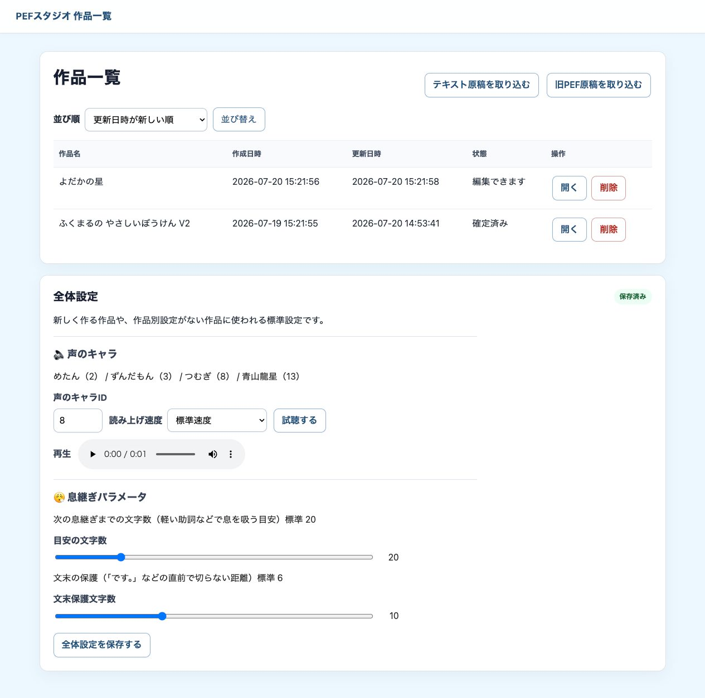
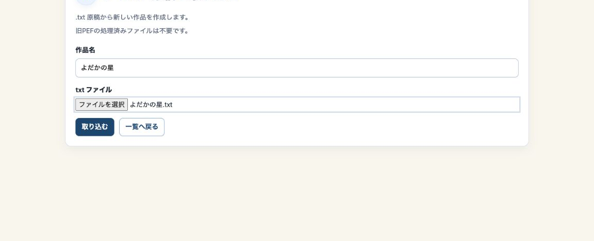
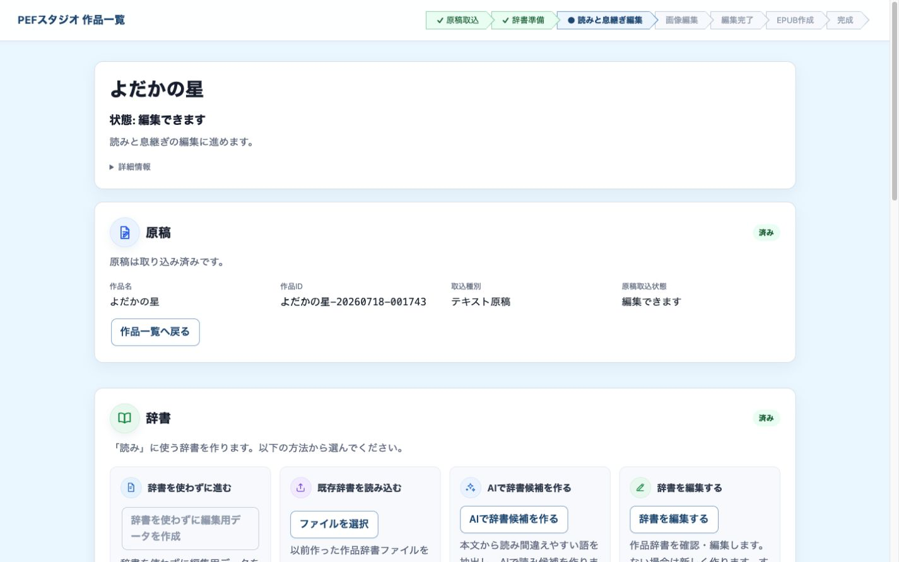
チャプター 07
辞書を確認する
読み間違えやすい語を、作品専用の辞書へ登録します。候補を一件ずつ確認し、「表記」と「よみ」を決めてください。
- 作品詳細から「辞書を編集する」を開きます。
- 必要な語を追加または修正します。
- 例として「夜だか」→「よだか」のように読みを登録します。
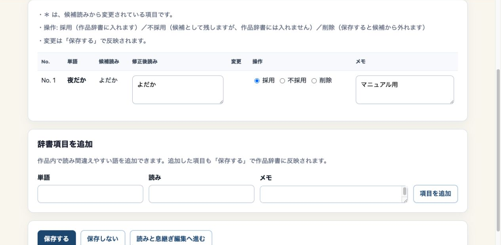
チャプター 08
読みと息継ぎを編集する
辞書を反映した本文を読みながら、ルビと息継ぎ位置を編集・確認します。不自然な箇所だけを直し、前後の文章も一緒に見ます。
|今日《きょう》 のように「|表記《よみ》」と入力します。今日は、よい天気です。ここで変更するのは読み上げ用テキストです。EPUBに表示する本文、章、画像位置は変わりません。
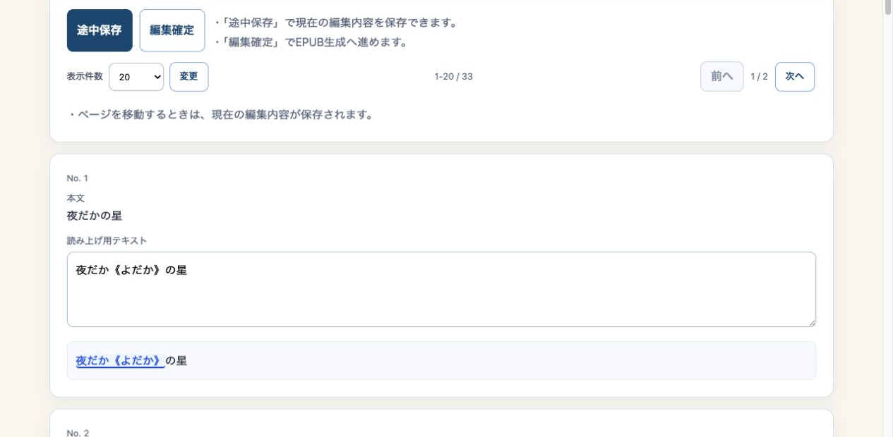
チャプター 09
読みを確定する
編集が終わったら「編集確定」ボタンで確定操作を行います。確定後に本文・辞書・読みを変更した場合は、音声やEPUBの作り直しが必要になることがあります。
チャプター 10
画像と代替テキスト（alt）を編集・確認する
画像がない作品では、この工程を飛ばせます。画像を使う場合は、原稿中の画像マーカーに対応するファイルを取り込み、画像ごとに代替テキスト（alt）を編集・確認します。
- 対応形式：PNG / JPG / JPEG
- 1ファイル：10MBまで
- 最大50ファイル、合計100MBまで
- フォルダを指定してのアップロードには対応していません
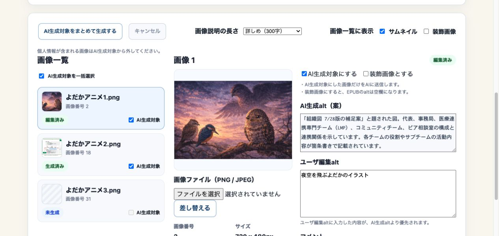
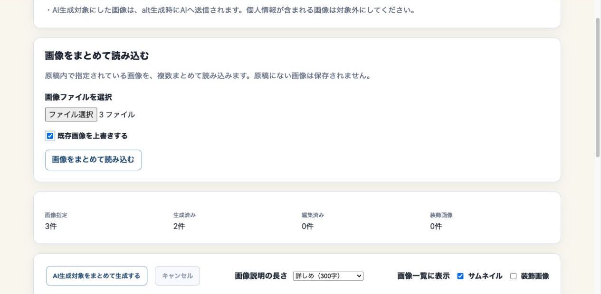
サムネイルと元画像
画像一覧には軽いサムネイルが表示されます。大きな確認表示とEPUBには元画像が使われます。サムネイルは、作品フォルダやGoogle Driveには保存されません。
内容理解に必要な画像には、人が確認した代替テキストを入力します。意味を持たない飾りは「装飾画像」にすると、代替テキストが空になります。採用順は「装飾画像指定」「人が編集した代替テキスト」「AI候補」です。AI候補は下書きです。
チャプター 11
音声を設定する
- 「声のキャラID」と「読み上げ速度」を確認します。
- 作品別に指定しない場合は「全体設定を使う」を選びます。全体設定は作品一覧画面で設定できます。
- 「試聴する」を押し、声の雰囲気と速さを確認します。
- 変更する場合は「この音声設定を保存する」を押します。
音声設定を変更した後は、EPUBを再生成してください。新しく音声生成が行われます。
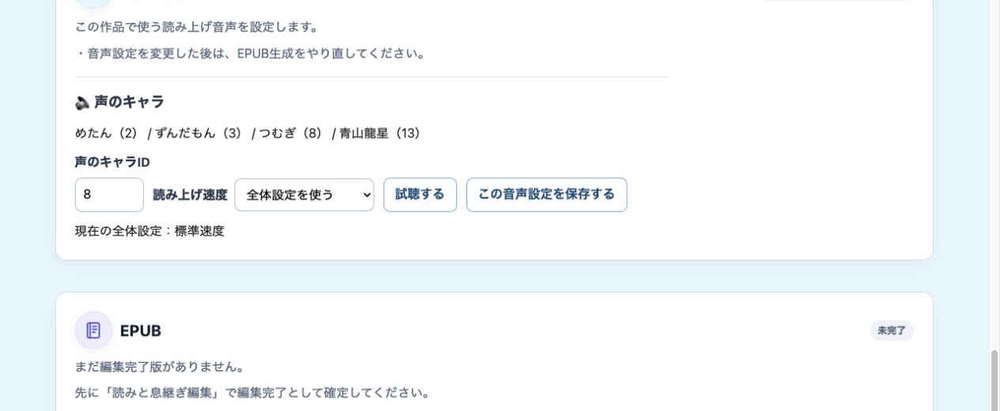
チャプター 12
音声生成の進捗を確認する
通常は、作品全体の音声生成を単独で始める必要はありません。「EPUB生成」を押したとき、音声がない、または古い場合は、必要な音声生成が先に始まります。
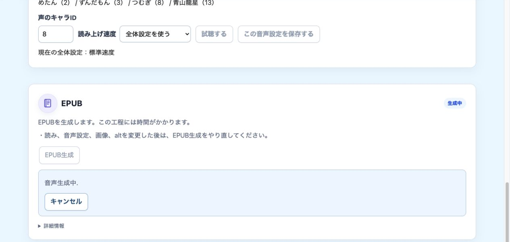
キャンセルを要求しても、現在の処理単位が終わるまですぐに止まらない場合があります。途中までの音声が正式成果物へ混ざることはありません。
チャプター 13
EPUBを生成し、ダウンロードする
作品詳細でEPUB生成を開始します。必要な音声が未生成、または古くなっている場合は、先に音声生成が行われます。完了後、EPUBファイルをダウンロードします。
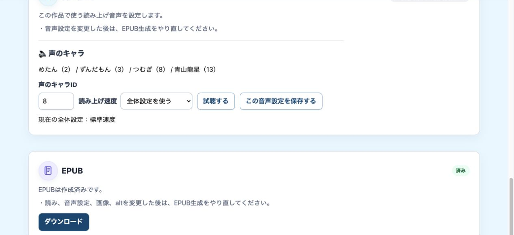
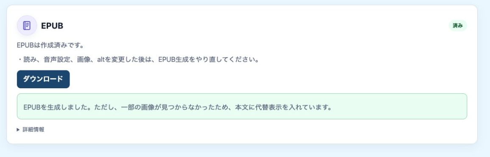
- 警告に表示された画像名を確認します。
- 原稿の画像名と画像ファイル名を合わせます。
- 画像を取り込み、EPUBを再生成します。
チャプター 14
完成したEPUBを確認する
- 表紙、タイトル、章の順番が正しい
- 本文に文字化けや欠落がない
- 画像が正しい位置に表示される
- 音声が本文と大きくずれていない
- 固有名詞や重要な語の読みが正しい
- 警告が残っていない
実際に配布・閲覧する環境でも開いてください。アプリによって表示や音声同期の挙動が異なる場合があります。
チャプター 15
何を変えたら、何を作り直す？
| 変更したもの | 次に行うこと |
|---|---|
| 読み、息継ぎ | EPUBを再生成。必要な音声生成が先に行われます |
| 画像ファイル、代替テキスト（alt） | EPUBを再生成 |
| 音声設定 | EPUBを再生成。新しく音声生成が行われます |
| 原稿本文、章、画像位置 | 元のtxtを直し、新しい作品として取り込み直してください |
チャプター 16
全体設定
作品一覧の「全体設定」は、新しく作る作品や、作品別の音声設定を保存していない作品に使われる標準設定です。
設定できること
- 「声のキャラID」：読み上げる声を選びます。
- 「読み上げ速度」：作品全体の基本の速さを選びます。
- 「息継ぎパラメータ」：長い文で機械的に息継ぎを入れる目安と、文末の近くで不自然に切らないための目安を調整します。
通常は、標準のままで問題ありません。読み上げが速すぎる、または長い文で息継ぎが不自然なときだけ調整してください。
保存する
設定を変更したら、忘れずに「全体設定を保存する」を押してください。
作品ごとに別の声や速さを設定した場合は、その作品の設定が全体設定より優先されます。
チャプター 17
AI機能を使うときの注意（中級者編）
- Gemini APIキーが必要な機能があります。
- 契約や利用量によって料金が発生する場合があります。
- AI辞書候補を使うと、本文由来の語がAIへ送信されます。
- 画像代替え（alt）生成では、対象画像がAIへ送信されます。
- AIが作る辞書候補と代替テキストは下書きです。必ず人が確認してください。
チャプター 18
困ったとき
次に進めない
作品詳細へ戻り、未完了の項目や画面上のメッセージを上から確認します。
読みが直らない
辞書の表記と読みを確認し、読みと息継ぎ編集へ反映されているか見ます。
画像が出ない
原稿内の画像ファイル指定文字列（[図:ファイル名]）と、画像ファイル名、拡張子、大文字・小文字を照合します。
音声が古い
読みや音声設定を変更した後は、EPUBを再生成します。新しく音声生成が行われます。
画像警告が出た
表示された画像名を確認し、原稿とファイル名を合わせて画像を取り込み、EPUBを再生成します。
生成をキャンセルした
すぐに停止しない場合があります。画面が完了・失敗・キャンセルの状態になるまで確認します。
チャプター 19
PEFスタジオ用語集
PEFスタジオで使う用語を、初心者向けにまとめた完成済み用語集の52語を統合しています。
| 用語 | カテゴリ | 意味 |
|---|---|---|
| 息継ぎ | 読みと息継ぎ | 読み上げの途中に入れる短い間（ポーズ）です。「、」などで表します。 |
| 音声設定 | 音声 | 読み上げに使う声、速さ、音量などの設定です。 |
| 音声付きEPUB | EPUB | 本文と音声が同期し、再生中の箇所を追いやすいEPUBです。 |
| 画像一括取り込み | 画像 | 複数の画像ファイルをまとめて選び、作品へ読み込む機能です。 |
| 画像alt | 画像alt | 画像の内容を伝えるため、EPUBに入れる説明文です。対応するEPUBリーダーや支援技術で利用されます。 |
| 画像alt生成 | AI | AIが画像を見て、画像altの案を作る機能です。結果は人が確認します。 |
| 画像挿入記法 | 原稿 | 原稿内で画像を入れる位置とファイル名を指定する書き方です。例：［図:sample.png］ |
| 旧PEF | 基本 | 以前のPEFツールや、その形式で作られたデータを指します。 |
| 旧PEF原稿 | 基本 | 旧PEFの形式で作られた原稿データです。 |
| 声のキャラID | 音声 | VOICEVOXで使う声の種類を指定する番号です。 |
| 再生成 | 基本 | 変更内容を反映するため、EPUBをもう一度作ることです。 |
| 作品 | 基本 | PEFスタジオで扱う、本や教材1件分の作業単位です。 |
| 作品一覧画面 | 基本 | 作品を探し、新しい原稿を取り込む最初の画面です。 |
| 作品辞書 | 辞書 | その作品だけで使う、作品専用の辞書です。 |
| 作品詳細画面 | 基本 | 選んだ作品の辞書、読み、画像、音声、EPUBの作業へ進む中心画面です。 |
| サムネイル | 画像 | 画像一覧を画面上で速く表示するための小さな画像です。EPUBには元画像が入ります。 |
| 辞書 | 辞書 | 言葉と正しい読みを登録し、読み間違いを防ぐために使います。 |
| 辞書候補 | 辞書 | 辞書に登録するか人が確認する、読み間違いやすい言葉の候補です。 |
| 章タイトル | 原稿 | 章や節の見出しとして、目次にも使われるタイトルです。行頭に「# 」を付けるか、「第1章…」などの形式で書きます。 |
| セグメント | 読みと息継ぎ | PEFスタジオが本文を分けて扱う、編集や音声生成の単位です。 |
| 装飾画像 | 画像alt | 内容理解に必要ない飾りの画像です。装飾画像にするとaltは空欄になります。 |
| 代替テキスト | 画像alt | 『画像alt』の別名です。画像の内容を文字で補います。 |
| テキスト原稿 | 基本 | PEFスタジオに取り込む、本文を書いた.txt形式（テキストファイル）の原稿です。 |
| 途中保存 | 基本 | 編集途中の内容を保存し、後から作業を再開するための操作です。 |
| 取り込み | 基本 | 原稿や画像ファイルをPEFスタジオへ読み込む操作です。 |
| 標準音声 | 音声 | PEFスタジオが通常作る本文の読み上げ音声です。画像altは読みません。 |
| 編集確定 | 基本 | 読みと息継ぎの編集を終え、EPUB生成へ進める状態にする操作です。 |
| ユーザ編集alt | 画像alt | 利用者が入力・修正した画像altです。EPUBではAI生成altより優先されます。 |
| 読み指定記法 | 読みと息継ぎ | 読みを指定する書き方です。例：|漢字《かんじ》 |
| 読みと息継ぎ編集 | 読みと息継ぎ | 読み方と文中の息継ぎ位置を確認・修正する工程です。 |
| ローカル版 | 環境 | 自分のPC上で動かすPEFスタジオです。 |
| AI APIキー | AI | AI機能を使うための認証用キーです。パスワードのように秘密にします。 |
| AI生成alt | 画像alt | AIが作った画像altの下書きです。内容は人が確認します。 |
| AI生成対象 | AI | AIに送って説明案を作る画像です。個人情報のある画像は対象から外します。 |
| AI辞書候補生成 | AI | AIが原稿から読み間違いやすい言葉の候補を作る機能です。 |
| alt | 画像alt | 『画像alt』の略称です。画像の内容を補うテキストを指します。 |
| Apple Books | EPUB | Apple製品のEPUBリーダーです。現在のPEFスタジオの音声付きEPUBは動作確認対象外です。 |
| Colab版 | 環境 | Google Colab上で動かすPEFスタジオです。作品データは主にGoogle Driveに保存します。 |
| Dolphin EasyReader | EPUB | スマホなどで音声付きEPUBを読むためのEPUBリーダーです。 |
| EPUB | EPUB | 文字や画像などをまとめて読める電子書籍のファイル形式です。 |
| EPUBリーダー | EPUB | EPUBファイルを開いて読む・再生するためのアプリです。 |
| EPUB生成 | EPUB | 編集内容と音声、画像をまとめてEPUBファイルを作る操作です。 |
| Google Drive | 画像 | オンラインの保存場所です。Colab版では作品データの保存に使います。 |
| JPEG | 画像 | 写真に向く画像形式です。拡張子は.jpgまたは.jpegです。 |
| NFC | 文字コード | 文字をできるだけ一つにまとめて表すUnicodeの形式です。 |
| NFD | 文字コード | 濁点などを文字と分けて表すUnicodeの形式です。見た目が同じでもNFCと内部表現が異なります。 |
| PEF2 | 基本 | 現在のPEFスタジオ（Plain EPUB Factory Studio）の略称です。 |
| PEFスタジオ | 基本 | 原稿の読みや息継ぎ、画像、音声を整え、音声付きEPUBを作る制作ツールです。 |
| PNG | 画像 | 図やイラストに向く画像形式です。拡張子は.pngです。 |
| Thorium | EPUB | PCでEPUBを開き、音声付きEPUBの動作確認に使える無料アプリです。 |
| VOICEVOX | 音声 | 本文の読み上げ音声を作るために使う外部の音声合成ソフトです。 |
| workspace | 画像 | PEFスタジオが作品データを保存する作業用フォルダです。 |
PEFスタジオ簡易マニュアル｜v1.7-2 用語集統合・検証版